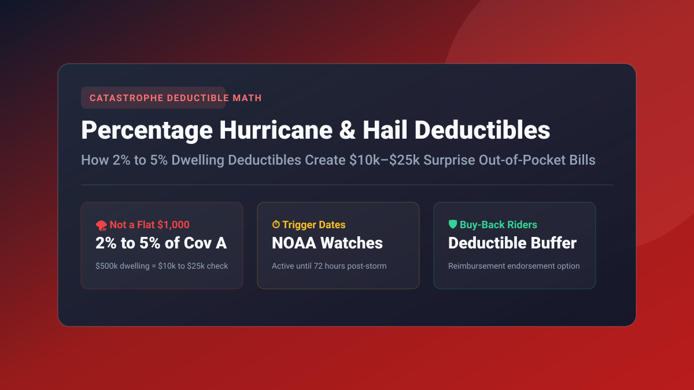

Key Takeaways at a Glance
- The Big Misconception: Percentage deductibles are calculated against your total Coverage A (Dwelling) replacement limit—NOT the repair bill amount.
- Severe Out-of-Pocket Dollar Math: On a $600,000 dwelling limit, a mandatory 2% hurricane deductible requires a $12,000 cash payment; a 5% deductible requires $30,000 before insurance pays $1.
- Peril Distinctions Matter: "Hurricane" deductibles only trigger during active NOAA tropical alerts, while broader "Named Storm" or "Wind/Hail" deductibles apply to any summer thunderstorm or localized squall.
- Deductible Buy-Back Options: Homeowners in Texas, Florida, and the Midwest can buy supplemental riders to cap catastrophic out-of-pocket exposure at $1,000 or $2,500.

Test Your Deductible Break-Even Point
Not sure whether to choose a $1,000, $2,500, or 2% percentage deductible? Simulate multi-year premium savings against claim probabilities with our Deductible Break-Even Simulator.
- 1. How Percentage Deductibles Work: The Coverage A Foundation
- 2. The Out-of-Pocket Math Matrix: 1%, 2%, 5% & 10% Scenarios
- 3. Hurricane vs. Named Storm vs. Wind/Hail: Which Peril Applies?
- 4. State Rules: Florida, Texas, Louisiana, Oklahoma & Colorado
- 5. Buy-Back Strategies: How to Cap Your Catastrophic Out-of-Pocket Bill
- Frequently Asked Questions
1. How Percentage Deductibles Work: The Coverage A Foundation
After a catastrophic windstorm or hurricane tears shingles off your roof, you file an insurance claim expecting to pay your familiar $1,000 all-peril deductible. You are stunned when the claims adjuster hands you an estimate stating that you must cover the first $15,000 yourself.
This is the reality of Percentage Catastrophe Deductibles. Unlike auto collision deductibles or standard home water damage deductibles (which are flat dollar sums like $500, $1,000, or $2,500), catastrophe deductibles are calculated directly as a percentage of your total Coverage A (Dwelling Replacement Limit). If your home has an insured rebuild limit of $500,000, a 2% deductible means you are contractually responsible for the first $10,000 in covered repairs.
2. The Out-of-Pocket Math Matrix: 1%, 2%, 5% & 10% Scenarios
As inflation and construction costs push home replacement limits higher, percentage deductibles compound exponentially. Here is what homeowners are legally obligated to pay across standard dwelling brackets:
| Insured Dwelling Limit (Coverage A) | 1% Percentage Deductible | 2% Percentage Deductible | 5% Percentage Deductible | 10% Percentage Deductible (High Coastal) |
|---|---|---|---|---|
| $350,000 (US Median) | $3,500 | $7,000 | $17,500 | $35,000 |
| $500,000 (Suburban Single Family) | $5,000 | $10,000 | $25,000 | $50,000 |
| $750,000 (Custom Metro Property) | $7,500 | $15,000 | $37,500 | $75,000 |
| $1,200,000 (Coastal Estate) | $12,000 | $24,000 | $60,000 | $120,000 |
3. Hurricane vs. Named Storm vs. Wind/Hail: Which Peril Applies?
The precise policy language dictates when the percentage deductible supersedes your standard $1,000 all-peril deductible:
- Hurricane Deductible (Most Protective): Can only be applied if the National Hurricane Center (NOAA) declares a named hurricane (Category 1 through 5). The trigger window begins when a hurricane watch or warning is posted in your state and ends 72 hours after the warning is terminated.
- Named Storm Deductible (Broader Risk): Triggers if NOAA designates the weather system as a named tropical depression, tropical storm, or subtropical gale—even if it never reaches official hurricane force.
- Wind/Hail Deductible (Most Restrictive): Enforced heavily across Texas, Colorado, Kansas, and the Midwest. Applies to any straight-line thunderstorm wind, tornadic squall, or hail event throughout the entire year, regardless of tropical classification.
4. State Rules: Florida, Texas, Louisiana, Oklahoma & Colorado
Nineteen coastal and hail-corridor states permit or mandate percentage catastrophe deductibles. State regulatory protections vary dramatically:
- Florida: Governed by Florida Statute § 627.701. Hurricane deductibles apply on a calendar-year basis. If two hurricanes strike your property in the same year, you only pay the percentage deductible once; subsequent storms in the same calendar year revert to your standard all-peril deductible.
- Texas & Louisiana: Insurers in coastal tier-1 counties routinely mandate a minimum 2% to 5% Named Storm deductible with no statutory calendar-year limit, meaning multiple storms can trigger multiple full deductible charges.
- Colorado & Oklahoma: Insurers have virtually eliminated flat deductibles for roofs, imposing mandatory 1% or 2% Wind/Hail deductibles to combat severe hail loss ratios.
5. Buy-Back Strategies: How to Cap Your Catastrophic Out-of-Pocket Bill
If your mortgage lender requires proof of emergency reserves or you simply cannot afford a surprise $20,000 deductible check after a storm, consider two mitigation strategies:
- Carrier Deductible Buy-Down: Pay an additional $200–$450 per year to your primary insurer to buy your percentage deductible down to a flat $1,000 or $2,500 limit.
- Standalone Deductible Reimbursement Policy: Specialty surplus underwriters write supplemental gap policies that reimburse you up to $10,000 or $20,000 toward your primary catastrophe deductible following an approved storm claim.
Frequently Asked Questions
How is a percentage insurance deductible calculated?
A percentage deductible is calculated as a percentage of your total Coverage A (Dwelling) replacement limit, NOT the amount of claim damage. For example, a 2% hurricane deductible on a home insured for $500,000 equals a $10,000 out-of-pocket payment before insurance contributes.
What triggers a hurricane or named-storm deductible?
State statutes dictate triggers. In Florida and Texas, the hurricane deductible is triggered when the National Hurricane Center (NOAA) issues a formal Hurricane Watch or Warning for any part of the state, and remains active until 72 hours after the watch or warning is officially terminated.
Can I buy down or eliminate a 2% or 5% hurricane deductible?
Yes. Many insurers offer a Deductible Buy-Back endorsement or allow you to pay an additional annual premium to secure a lower flat dollar deductible ($1,000 or $2,500), or you can purchase a supplemental standalone deductible reimbursement policy.